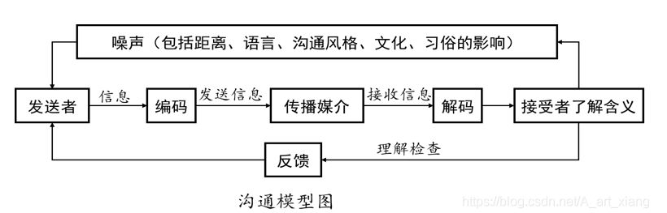
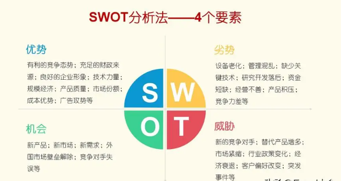
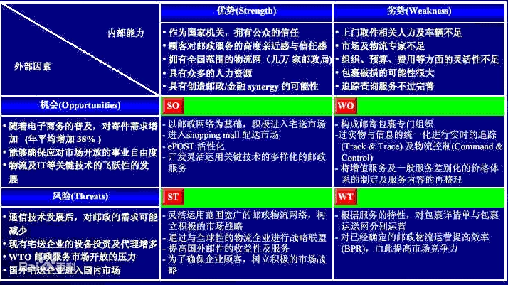

一线真实困惑，每个问题对应一套方法
决定做与不做的最底层逻辑
象限 / 描述 / 计划 / 风险等 8 件武器
沟通能力 > 业务能力
问题描述法 · 需求描述法 · 三兄弟法
第二象限工作法
接收 · 分解 · 追踪 · 赶工
退出舒适地带，抢做超值任务
SWOT · 正负磁场 · 斯多葛控制二分法
不是口号，是遇事时的第一反应：这个忙帮不帮？这个活接不接？这句话说不说？
国家目标 · 社会取向 · 公民准则，三个层面层层落地。
不是抽象口号，是看清自己站在哪块土壤上。
时代红利是最强杠杆，顺势而为比单打独斗重要。
平台会换、项目会停，长在自己身上的能力谁也拿不走。
重要 × 紧急，先做第 II 象限
现象 / 影响 / 分析三段式
背景 / 场景 / 功能三段式
WBS 分解 + 依赖编排
日报推进，目标 + WBS 落地
SWOT 定策略
能控制的做好，不能控制的不抱怨
总分结构：标题 + 123

例会 · 周报 · 总结会 · 座谈会 · 党会 · 领导找你时的每一次沟通
主动汇报：各部门领导都可以直接去找，不官僚
主动总结：转正 / 年终 / 大项目 / 知识总结
❶ 认为别人已经听明白了
❷ 默认不回复就是同意了
与 Answer 成对要加问号，要被回答
与 Solution 成对要解决，要寻求方案
描述不清楚 → 别人帮不上忙，甚至被瞎指挥；描述清楚 → 很多情况下，自己就能解决。
客户提出的，是"想要什么结果"
我们转换的，是"系统怎么实现"
客户为什么提？动机和出发点？想解决什么业务问题？
谁，在什么时候，通过什么操作，达到什么目的？
前两步说清后，再谈功能、性能、操作方式的要求。
标题命名好了吗？一句话说清主题
1、2、3 是并列关系吗？厚此薄彼了吗？
1、2、3 合起来覆盖了标题吗？
标题 XXX，详情如下：1 … 2 … 3 …
救火队员必须做：公司发的邮件、不得不做——立马就做
每天 80% 时间投这里；有充足时间深思熟虑，保证质量效率
对别人重要：支撑到位即可，短平快，别多占自己时间
不做计划考虑
尽快识别重要事情并落地，避免下一步更忙。
把 Ⅱ 拖成 Ⅰ ——重要的事情紧急做，质量存疑。
两周内 → 分解到两三天粒度；两周后 → 粗粒度，渐进明细。
增加投入，压缩关键路径时长
串行改并行，能同时干的同时干
与干系人确认，砍掉非关键内容
加人、加设备，好钢用在刀刃上
换更高效的工具、流程和打法
减少返工，一次做对就是最快的路
圈子无好坏，各有价值——不要妄自菲薄，圈内过程同样精彩（工匠的故事）。
进入学习地带：主动挑战难度、摆脱路径依赖、不断充电。
看领导、"样板"同事在做什么，做好接收超值任务的准备，站上新平台。

内部能力：我强在哪？
内部能力：我缺什么？
外部因素：风往哪吹？
外部因素：雷在哪埋着？

→ 让自己成为正能量的磁场源
对事情的解决没有建设性作用。
负能量磁场更大——远离社会上负能量的人和事。
能控制的 → 做的做好
不能控制的 → 做最坏的打算，不抱怨，不影响心情
没有对错，目标导向。
也没有对错，不生气导向。